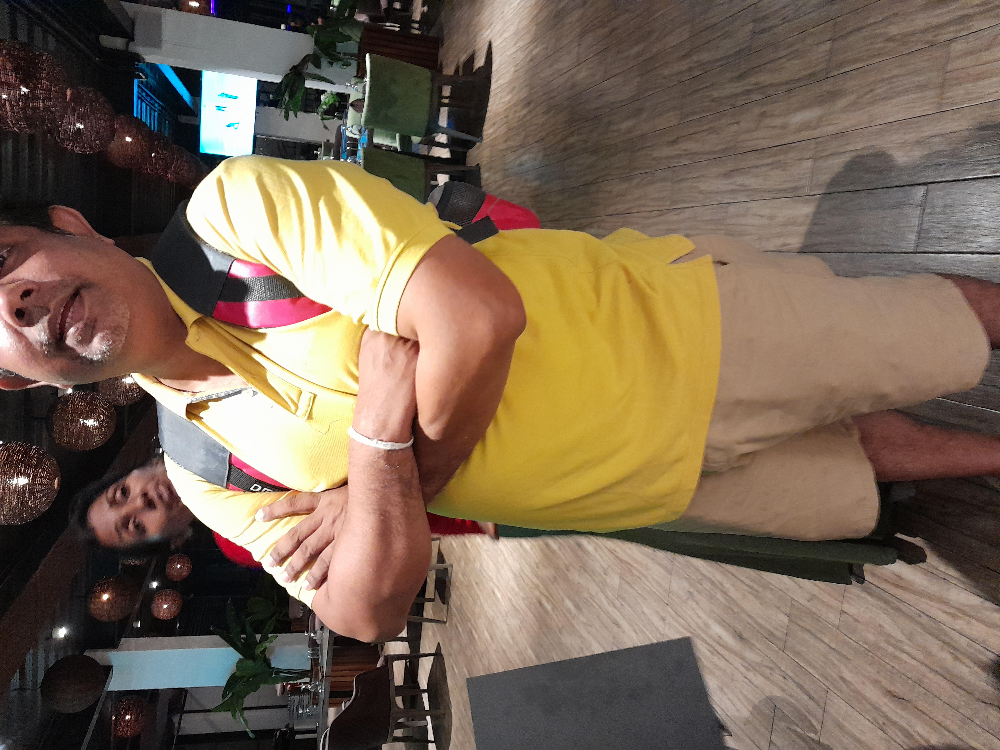
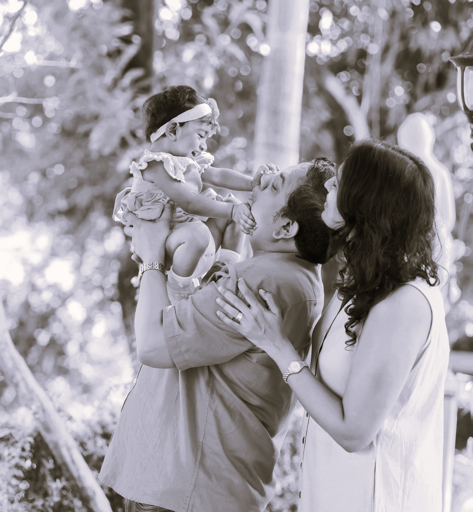
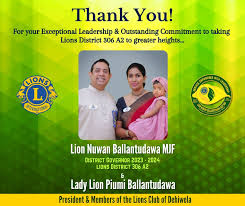

Lions Club Leader | Community Servant | Governor Year Portfolio
Nuwan Ballantudawa began his journey with the Lions Club through passion, leadership, and social responsibility.
Participated in welfare campaigns, healthcare programs, youth empowerment activities, and community development initiatives.
Started as an active Lions Club member.
Led multiple humanitarian projects.
Managed club administration and coordination.
Led impactful community initiatives.
Expanded Lions community outreach and leadership.
Introduced impactful district-wide initiatives focusing on healthcare, education, environment, and youth development.
Expanded Lions Club engagement through collaborative service projects and awareness campaigns.
Successfully organized district service activities and leadership programs.
Organized medical camps, blood donation drives, and health awareness campaigns.
Provided scholarships and educational support programs.
Conducted tree planting campaigns and sustainability projects.
Led leadership workshops and youth motivational programs.
Explore selected pages from the Lions District Directory.


